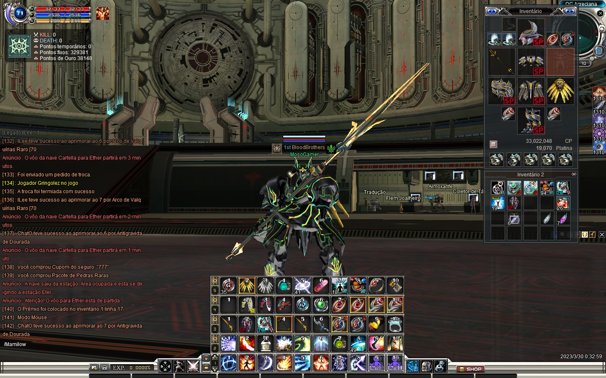

Surgimento
RF Online ou Rising Force Online (em coreano: 라이징 포스 온라인 RF온라인), é um MMORPG desenvolvido pela CCR Inc. A primeira versão do jogo foi lançada na Coreia do Sul, e depois traduzido para línguas chinesa, japonesa e inglesa. O lançamento da versão americana foi em 21 de fevereiro de 2006.

No Brasil o jogo entrou na fase open beta dia 28 de novembro de 2006. O servidor brasileiro é de responsabilidade da empresa Level Up! Games, e teve o lançamento comercial no dia 1 de fevereiro de 2007 e término em 24 de novembro de 2011.[1] No dia 18 de abril de 2016 foi anunciado a sequência do jogo, intitulado RF Online 2.[2]
Como funcionava
O jogo tem um sistema de 3 raças, onde cada uma tem como objetivo, Grind e CW. São elas:
Acreccia: Meio Humanos e meio Robôs que vieram de um mundo devastado por uma pandemia, tem como sua especialidade, a tecnologia e estão a procura de minerios raros
Bellato: Anões que usam magia, onde, por origem na já viviam no planeta em que a guerra acontece
Cora: Elfos mágicos que, como os acrecianos, vieram de outro sistema solar, que tem o mesmo objetivo de adquirir minerios raros do planeta de Novus para crescer a raça